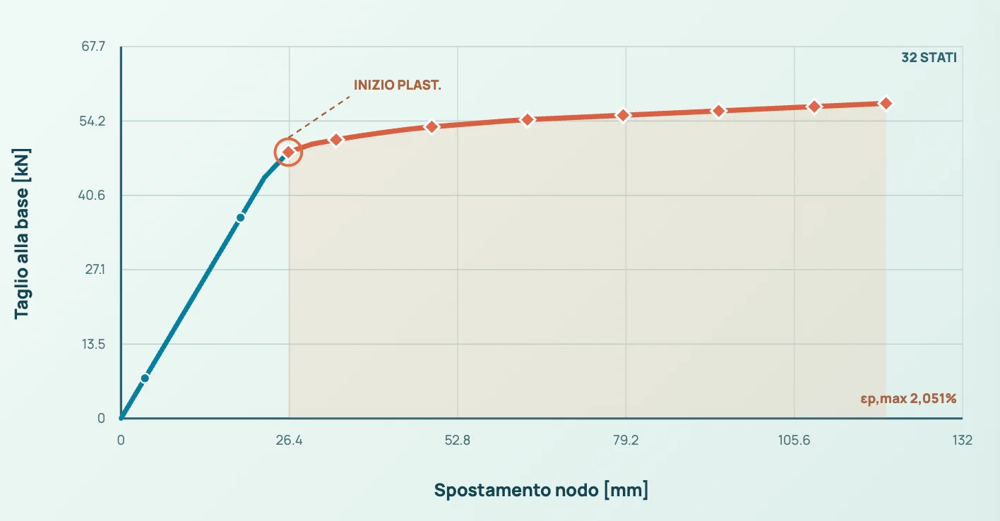
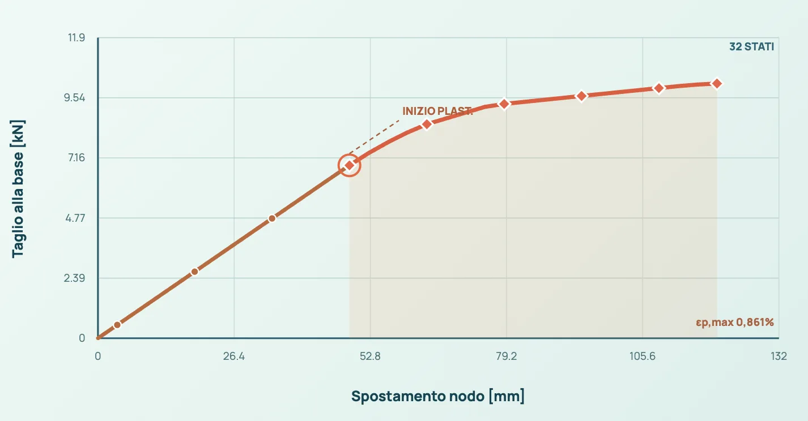
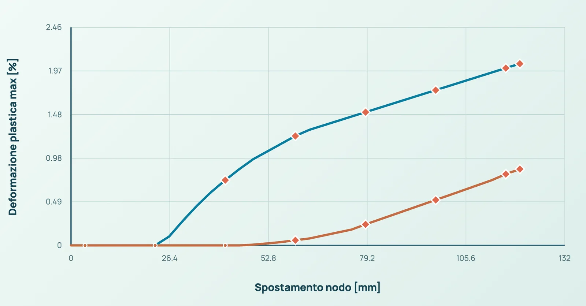

02.A / DIREZIONE X / ASSE FORTEIPE 300 · S235

Curva calcolata e inizio plasticizzazione delle fibre · X
DELGHE / DÈLGHEM · INGEGNERIA STRUTTURALE PER MAC
DÈLGHEM. L’app di calcolo strutturale progettata per macOS e Apple Silicon. Un nuovo spazio per le tue strutture.

Torre nativa DÈLGHEM D2 · 8 piani · 24 plinti · 3 coperture differenti · geometria non verificata
Visualizzazione dimostrativa · nessun risultato di calcolo
Geometria, proprietà e risultati nello stesso ambiente. Guarda da vicino l’interfaccia reale di DÈLGHEM.
Viste del modello e strumenti di lavoro dell’applicazione.
Apri il Mac. Entra nel tuo progetto. DÈLGHEM porta il calcolo strutturale direttamente nell’ambiente in cui lavori.
Il percorso nativo
Un’app Mac. Nessuna macchina virtuale Windows da avviare.
Il percorso con virtualizzazione
Le applicazioni Windows ARM64 non richiedono la traduzione x86/x64. Questo schema descrive l’architettura, non misura le prestazioni.
Una build ARM64 esegue istruzioni compatibili con Apple Silicon. Un software di virtualizzazione può eseguire un sistema operativo guest, ad esempio Windows Arm; alcune applicazioni x86/x64 possono richiedere la traduzione delle istruzioni. L'impatto sulle prestazioni dipende da hardware, carico di lavoro e configurazione: l'esecuzione nativa non garantisce automaticamente tempi inferiori.
Fonti tecniche: Apple DeveloperMicrosoft
Tempi di soluzione, memoria e fluidità: i confronti con altri ambienti saranno pubblicati insieme ai modelli e alle condizioni di prova.
Stesso Mac e problema strutturale equivalente, software e versioni dichiarati, risultati numerici confrontabili. Almeno cinque ripetizioni, mediana e variabilità; tempi di avvio, soluzione ed esportazione separati. Memoria dell’app e dell’intero ambiente misurate distintamente.
Non sono ancora disponibili benchmark comparativi verificati per questa presentazione.
Dal modello agli elaborati: mappe tensionali di un telaio irregolare reale con parete, apertura e impalcato; percorsi Pushover a fibre plasticizzate, IDA non lineari e segnali sismici effettivamente elaborati dai solutori. Ogni grafico proviene da un benchmark D2 distinto e ne espone i limiti.
Risultati statici OpenSeesPy su 176 shell QUAD4 con parete forata, impalcato e travi accoppiate. Le tensioni per faccia sono reali e i colori rappresentano la media dei quattro punti di Gauss, senza inventare un campo continuo ai nodi.

Due veri percorsi non lineari di controllo spostamento, in direzione X e Y, sulla stessa mensola verticale in acciaio S235 con profilo IPE 300. Le fibre plasticizzano; il grafico termina all’ultimo incremento calcolato, senza attribuire un collasso non raggiunto.

Curva calcolata e inizio plasticizzazione delle fibre · X

Curva calcolata e inizio plasticizzazione delle fibre · Y

Mensola verticale 3 m, incastro alla base e spostamento imposto in testa. Profilo e acciaio dal modello D2.

Risultati KratosMultiphysics/Newmark con fibre d’acciaio: 16 analisi effettivamente completate su due modelli diagnostici orientati X/Y, ciascuno con otto intensità. I punti pieni indicano plasticizzazione delle fibre. Nessun collasso simulato o fragilità statistica dedotta.


Risposta dinamica taglio–spostamento del modello selezionato all’intensità massima analizzata.


Tracce numeriche effettivamente applicate alle analisi IDA D2: accelerazione del terreno, risposta nodale e istogramma delle grandezze massime. Sono segnali analitici diagnostici, non registrazioni storiche di terremoti.


Ingrandisci ogni tavola. Sono acquisizioni del visualizzatore del sito alimentato dai risultati reali dei benchmark DÈLGHEM D2: non sono schermate dell’interfaccia dell’app né elaborati di progetto certificati.
↗ INGRANDISCI176 elementi shell con apertura, piastra e telai: stress Von Mises OpenSeesPy.
32 stati OpenSeesPy, plastificazione della sezione IPE 300 S235.
Deformazioni plastiche effettivamente calcolate sui due percorsi X/Y.
↗ INGRANDISCIOtto analisi Kratos, punti del ramo plastico differenziati.
↗ INGRANDISCITaglio–spostamento ricostruito dagli stati convergenti Kratos.
↗ INGRANDISCISegnale realmente impiegato nella simulazione D2, non registrazione di sisma storico.
Provenienza: calcoli D2 OpenSeesPy/Kratos → JSON tracciabili → rendering Canvas/SVG → immagini in alta risoluzione; nessun diagramma ingegneristico generato artificialmente.
176 shell e 66 aste del caso B01 calcolati con OpenSeesPy; Pushover in acciaio S235 con OpenSeesPy e fibre plasticizzate; IDA multi-intensità con KratosMultiphysics. Per ogni risultato sono disponibili file JSON, sorgenti e impronte SHA-256. La scena strutturale non è il telaio dimostrativo della home.
I grafici sono risultati numerici di benchmark con condizioni di carico assegnate, non verifiche di sicurezza strutturale certificate. Nessuna capacità ultima, danno sismico, collasso o curva di fragilità è dedotta oltre i risultati osservati.
Genius trasforma le istruzioni tecniche supportate in operazioni reali e modificabili sul modello strutturale. Crea geometrie, modifica sezioni, assegna carichi e coordina le attività, mostrando un’anteprima validata prima di applicare qualsiasi modifica.
LA POTENZA È NEL FLUSSO DI LAVORO
Usa comandi italiani o inglesi con ID reali del modello, dimensioni e unità di misura.
Genius interpreta l’istruzione nel progetto corrente e mostra effetti o errori espliciti.
Solo una transazione confermata cambia il modello, con funzioni Annulla e Ripristina.
Crea nodi e travi, copia, trasla e suddividi aste in parti uguali.
Assegna profili e materiali di catalogo, incluse sezioni IPE e acciaio S355.
Assegna carichi nodali, distribuiti, concentrati, termici e pressioni sulle piastre, con unità esplicite.
Cerca elementi, consulta proprietà, usa suggerimenti contestuali e richiama flussi di analisi supportati.
La potenzialità strategica è un’interfaccia consapevole del modello che unisce creazione, selezione, proprietà, carichi e comandi di analisi, mantenendo le verifiche e i vincoli del modello dati DÈLGHEM.
Inserisci un nuovo nodo in 0 0 4Sostituisci la trave B4 con una IPE400 S355Suddividi la trave B4 in 4 partiApplica carico Fz=-10 kN My=2 kNm al nodo N4 nel caso GConfigura PushoverScegli un esempio e osserva come un’istruzione tecnica diventa un’operazione precisa sul modello, sempre soggetta al controllo del progettista.
Inserisci un nodo in 0 0 4Dimostrazione illustrativa: questo sito non esegue comandi Genius né analisi FEM. Nell’applicazione di sviluppo le modifiche richiedono conferma; le analisi avanzate restano soggette a validazione.
Genius è un’interfaccia locale a comandi deterministici, non un progettista autonomo. Ogni modifica e analisi richiede verifica professionale. Un comando non costituisce una verifica strutturale certificata.
Esplora gli strumenti presenti nella versione di sviluppo. Ogni parte del progetto ha il suo spazio.
Nodi, aste, piastre, materiali e sezioni. Costruisci la geometria e lavora sulle proprietà degli elementi attraverso le viste del modello.
Guarda la schermataAnalisi statiche, modali e spettrali nei domini implementati. Leggi risultati, deformate e diagrammi delle sollecitazioni, passando dalla geometria alla risposta strutturale.
Guarda la schermataTavole delle aste in acciaio, sezioni delle piastre e fascicoli. Un compositore dedicato organizza la relazione; gli elaborati accompagnano lo sviluppo del progetto, nei domini implementati.
Guarda la schermataViste 3D, in pianta e in prospetto. Materiali e sezioni, ispezione degli elementi, salvataggio e riapertura del progetto. Temi chiaro e scuro per il tuo ambiente di lavoro.
Le schermate mostrano una versione in sviluppo. La disponibilità commerciale e il perimetro della versione di rilascio saranno comunicati separatamente.
INGEGNERIA / IN DETTAGLIO
Dodici aree tecniche, ciascuna descritta secondo lo stato reale di sviluppo. Nessuna schermata sostituisce la verifica strutturale del progetto.

Nodi, aste, shell e diaframmi, proprietà materiali e sezioni. Modello spaziale e operazioni grafiche nel campo verificato.

Carichi, vincoli, combinazioni e risposta elastica, con controlli di equilibrio e confronti indipendenti per i casi documentati.

Modi di vibrare, masse e analisi specialistiche disponibili per domini qualificati. Pushover e IDA conservano casi non ancora validati.

Elementi di superficie, piastre, impalcati e discretizzazioni FEM con controllo della geometria e del passo di mesh.

Visualizzazione della risposta strutturale, degli spostamenti e dei diagrammi delle azioni interne per analisi ammesse.

Profili I/H e tubolari in sottodomini verificati. Instabilità, sezioni efficaci e interazioni avanzate non sono ancora generali.

Piastre, fori, quote, sezioni e tavole. Esistono verifiche favorevoli, superate e da riesaminare: nessun esito viene mascherato.

Verifiche e armature di travi, pilastri e sistemi piastra nei casi implementati; ancoraggi e interazioni generali restano aperti.

Winkler, plinti e sistemi con pali nei percorsi verificati. L’interazione geotecnica tridimensionale avanzata è in sviluppo.

Carpenterie, fascicoli per piano e dettagli Officina delle aste in acciaio. DXF operativo; DWG bidirezionale generale ancora aperto.

Comandi testuali locali con anteprima, validazione e operazioni annullabili: nodi, sezioni, proprietà e carichi entro la grammatica supportata.

Compositore degli elaborati e applicazione macOS ARM64 con runtime numerici locali. Prodotto ancora in sviluppo, non certificato per uso esecutivo generale.
DÈLGHEM D2 / TAVOLE DI ARMATURA REALI
La versione di sviluppo DÈLGHEM D2 esporta disegni di armatura per singola asta. Esplora estratti A1 e DXF autentici di pilastri e travi: non sono immagini di repertorio né disegni ricreati.
 TAVOLA A1 REALE · INGRANDISCI ↗
TAVOLA A1 REALE · INGRANDISCI ↗
L’esportazione comprende viste longitudinali, diametri dei ferri, passi di staffatura, quote, copriferri e distinte. Gli esempi sono ricavati dai file originali prodotti da DÈLGHEM.
 01 / PILASTRO C1Sezione, 8 barre longitudinali e staffe
01 / PILASTRO C1Sezione, 8 barre longitudinali e staffe
 02 / TRAVE BX1Sezione e sviluppo delle armature
02 / TRAVE BX1Sezione e sviluppo delle armature
 03 / TRAVE BY1Barre e staffe dal DXF nativo
03 / TRAVE BY1Barre e staffe dal DXF nativo
L’audit indipendente delle 87 tavole verifica geometria CAD, integrità dei layer e distinte nel dominio esaminato. Sono elaborati preliminari e non esecutivi: ancoraggi, dettagli sismici e verifiche resistenti del caso concreto richiedono approfondimenti progettuali.
DELGHEM D2 / Schermate autentiche
Acquisizioni del programma DÈLGHEM: modello in acciaio, dettaglio quotato di collegamento e lavorazioni d’officina. Nessuna illustrazione artificiale.
ACQUISIZIONI REALI / CARPENTERIE IN ACCIAIO
Schermate autentiche di DÈLGHEM D2: geometria di piano, identificativi di travi e pilastri, anteprima del fascicolo di carpenteria e risultati di un percorso di analisi. Nessuna immagine generata.


ACTUAL APP / VISUAL LIBRARY
Schermate autentiche dell’app macOS, delle build di verifica e delle tavole esportate. Nessuna interfaccia inventata.
Schermate di prova e di sviluppo. Non tutti i percorsi rappresentati sono qualificati per la progettazione esecutiva generale.
PROGRAMMA DI SVILUPPO
vAlpha1 2027Un obiettivo di sviluppo, non una promessa irrevocabile di disponibilità commerciale. Costruiamo un ambiente FEM per Apple Silicon con verifiche e limiti dichiarati.
Sostieni il progettoSVILUPPO INDIPENDENTE / COMMUNITY
DÈLGHEM nasce per rendere il calcolo strutturale più naturale su Apple Silicon. Se desideri contribuire allo sviluppo, puoi inviare un contributo volontario con PayPal tramite il tuo account.
Approfondisci il progettoIl destinatario usa un conto PayPal personale. Per questo non è disponibile un pulsante di donazione benefica. Il collegamento apre PayPal per un normale invio di denaro; il destinatario va inserito manualmente.
Accedi al tuo conto e scegli «Invia e richiedi».
Copia e incolla l’indirizzo PayPal indicato qui sotto.
Per un contributo collegato a un progetto commerciale usa «Beni e servizi», se disponibile, e verifica eventuali commissioni.
Un link PayPal.Me diretto sarà attivato soltanto dopo che il titolare ne avrà comunicato e verificato l’indirizzo ufficiale.
Non è una raccolta fondi benefica e non dà diritto a detrazioni fiscali, licenze o accessi anticipati. La possibilità di ricevere denaro dipende dalle impostazioni e dalle verifiche del conto PayPal.DÈLGHEM
Un progetto di DELGHE. Calcolo strutturale, progettato per Mac.
Rivedi la presentazione